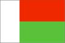

{kind=link}


![[Country map of Madagascar]](../maps/ma-map.jpg)
| Madagascar |  |
|
| | |
| Introduction |
Background: Formerly an independent kingdom, Madagascar became a French colony in 1886, but regained its independence in 1960. During 1992-93, free presidential and National Assembly elections were held, ending 17 years of single-party rule.
| Geography |
Location: Southern Africa, island in the Indian Ocean, east of Mozambique
Geographic coordinates: 20 00 S, 47 00 E
Map references: Africa
Area:
total:
587,040 sq km
land:
581,540 sq km
water:
5,500 sq km
Area - comparative: slightly less than twice the size of Arizona
Land boundaries: 0 km
Coastline: 4,828 km
Maritime claims:
contiguous zone:
24 nm
continental shelf:
200 nm or 100 nm from the 2,500-m deep isobath
exclusive economic zone:
200 nm
territorial sea:
12 nm
Climate: tropical along coast, temperate inland, arid in south
Terrain: narrow coastal plain, high plateau and mountains in center
Elevation extremes:
lowest point:
Indian Ocean 0 m
highest point:
Maromokotro 2,876 m
Natural resources: graphite, chromite, coal, bauxite, salt, quartz, tar sands, semiprecious stones, mica, fish, hydropower
Land use:
arable land:
4%
permanent crops:
1%
permanent pastures:
41%
forests and woodland:
40%
other:
14% (1993 est.)
Irrigated land: 10,870 sq km (1993 est.)
Natural hazards: periodic cyclones
Environment - current issues: soil erosion results from deforestation and overgrazing; desertification; surface water contaminated with raw sewage and other organic wastes; several species of flora and fauna unique to the island are endangered
Environment - international agreements:
party to:
Biodiversity, Climate Change, Desertification, Endangered Species, Hazardous Wastes, Marine Life Conservation, Nuclear Test Ban, Ozone Layer Protection, Wetlands
signed, but not ratified:
Law of the Sea
Geography - note: world's fourth-largest island; strategic location along Mozambique Channel
| People |
Population: 15,506,472 (July 2000 est.)
Age structure:
0-14 years:
45% (male 3,504,562; female 3,481,056)
15-64 years:
52% (male 3,964,564; female 4,052,056)
65 years and over:
3% (male 237,691; female 266,543) (2000 est.)
Population growth rate: 3.02% (2000 est.)
Birth rate: 42.92 births/1,000 population (2000 est.)
Death rate: 12.69 deaths/1,000 population (2000 est.)
Net migration rate: 0 migrant(s)/1,000 population (2000 est.)
Sex ratio:
at birth:
1.03 male(s)/female
under 15 years:
1.01 male(s)/female
15-64 years:
0.98 male(s)/female
65 years and over:
0.89 male(s)/female
total population:
0.99 male(s)/female (2000 est.)
Infant mortality rate: 85.26 deaths/1,000 live births (2000 est.)
Life expectancy at birth:
total population:
54.95 years
male:
52.71 years
female:
57.26 years (2000 est.)
Total fertility rate: 5.84 children born/woman (2000 est.)
Nationality:
noun:
Malagasy (singular and plural)
adjective:
Malagasy
Ethnic groups: Malayo-Indonesian (Merina and related Betsileo), Cotiers (mixed African, Malayo-Indonesian, and Arab ancestry - Betsimisaraka, Tsimihety, Antaisaka, Sakalava), French, Indian, Creole, Comoran
Religions: indigenous beliefs 52%, Christian 41%, Muslim 7%
Languages: French (official), Malagasy (official)
Literacy:
definition:
age 15 and over can read and write
total population:
80%
male:
88%
female:
73% (1990 est.)
| Government |
Country name:
conventional long form:
Republic of Madagascar
conventional short form:
Madagascar
local long form:
Republique de Madagascar
local short form:
Madagascar
former:
Malagasy Republic
Data code: MA
Government type: republic
Capital: Antananarivo
Administrative divisions: 6 provinces (faritany); Antananarivo, Antsiranana, Fianarantsoa, Mahajanga, Toamasina, Toliara
Independence: 26 June 1960 (from France)
National holiday: Independence Day, 26 June (1960)
Constitution: 19 August 1992 by national referendum
Legal system: based on French civil law system and traditional Malagasy law; has not accepted compulsory ICJ jurisdiction
Suffrage: 18 years of age; universal
Executive branch:
chief of state:
President Didier RATSIRAKA (since 10 February 1997)
head of government:
Prime Minister Tantely Rene Gabriot ANDRIANARIVO (since NA 1998)
cabinet:
Council of Ministers appointed by the prime minister
elections:
president elected by popular vote for a five-year term; election last held 29 December 1996 (next to be held NA 2002); prime minister appointed by the president from a list of candidates nominated by the National Assembly
election results:
Didier RATSIRAKA elected president; percent of vote - Didier RATSIRAKA (AREMA) 50.7%, Albert ZAFY (AFFA) 49.3%
Legislative branch:
unicameral National Assembly or Assemblee Nationale (150 seats; members are directly elected by popular vote to serve four-year terms); note - the legislature is scheduled to become a bicameral Parliament with the establishment of a Senate; two-thirds of the seats of this Senate will be filled by regional assemblies whose members will be elected by popular vote; the remaining one-third of the seats will be appointed by the president; the total number of seats will be determined by the National Assembly; all members will serve four-year terms
elections:
National Assembly - last held 17 May 1998 (next to be held NA 2002)
election results:
National Assembly - percent of vote by party - NA; seats by party - AREMA 63, LEADER/Fanilo 16, AVI 14, RPSD 11, AFFA 6, MFM 3, AKFM/Fanavaozana 3, GRAD/Iloafo 1, Fihaonana 1, independents 32
Judicial branch: Supreme Court or Cour Supreme; High Constitutional Court or Haute Cour Constitutionnelle
Political parties and leaders: Action, Truth, Development, and Harmony or AFFA [Professor Albert ZAFY]; Association for the Rebirth of Madagascar or AREMA [Pierrot RAJAONARIVELO]; Congress Party for Malagasy Independence or AKFM/Fanavaozana [Pastor Richard ANDRIAMANJATO]; Economic Liberalism and Democratic Action for National Recovery or LEADER/Fanilo [Herizo RAZAFIMAHALEO]; Fihaonana Rally or Fihaonana [Guy RAZANAMASY]; Group of Reflection and Action for the Development of Madagascar or GRAD/Iloafo [Tovonanahary RABETSITONTA]; Judged by Your Work or AVI [Norbert RATSIRAHONANA]; Movement for the Progress of Madagascar or MFM [Manandafy RAKOTONIRINA]; National Union for Development and Democracy or UNDD; Renewal of the Social Democratic Party or RPSD [Evariste MARSON]
Political pressure groups and leaders: Federalist Movement; National Council of Christian Churches or FFKM
International organization participation: ACCT, ACP, AfDB, CCC, ECA, FAO, G-77, IAEA, IBRD, ICAO, ICC, ICFTU, ICRM, IDA, IFAD, IFC, IFRCS, ILO, IMF, IMO, InOC, Intelsat, Interpol, IOC, IOM (observer), ISO (correspondent), ITU, NAM, OAU, OPCW, UN, UNCTAD, UNESCO, UNHCR, UNIDO, UPU, WCL, WFTU, WHO, WIPO, WMO, WToO, WTrO
Diplomatic representation in the US:
chief of mission:
Ambassador (vacant); Charge d'Affaires Biclair Henri ANDRIANANTOANDRO
chancery:
2374 Massachusetts Avenue NW, Washington, DC 20008
telephone:
[1] (202) 265-5525, 5526
consulate(s) general:
New York
Diplomatic representation from the US:
chief of mission:
Ambassador Shirley E. BARNES
embassy:
14-16 Rue Rainitovo, Antsahavola, Antananarivo
mailing address:
B. P. 620, Antananarivo
telephone:
[261] (2) 212-57, 200-89, 207-18
FAX:
[261] (2) 345-39
Flag description: two equal horizontal bands of red (top) and green with a vertical white band of the same width on hoist side
| Economy |
Economy - overview: Madagascar faces problems of chronic malnutrition, underfunded health and education facilities, a roughly 3% annual population growth rate, and severe loss of forest cover, accompanied by erosion. Agriculture, including fishing and forestry, is the mainstay of the economy, accounting for 34% of GDP and contributing more than 70% to export earnings. Industry features textile manufacturing and the processing of agricultural products. Growth in output in 1992-97 averaged less than the growth rate of the population. Growth has been held back by antigovernment strikes and demonstrations, a decline in world coffee demand, and the erratic commitment of the government to economic reform. Formidable obstacles stand in the way of Madagascar's realizing its considerable growth potential; the extent of government reforms, outside financial aid, and foreign investment will be key determinants. Growth should be in the 5% range in 2000-01.
GDP: purchasing power parity - $11.5 billion (1999 est.)
GDP - real growth rate: 4.5% (1999 est.)
GDP - per capita: purchasing power parity - $780 (1999 est.)
GDP - composition by sector:
agriculture:
34%
industry:
12%
services:
54% (1997 est.)
Population below poverty line: NA%
Household income or consumption by percentage share:
lowest 10%:
2.3%
highest 10%:
34.9% (1993)
Inflation rate (consumer prices): 9.5% (1999 est.)
Labor force: 7 million (1995)
Unemployment rate: NA%
Budget:
revenues:
$553 million
expenditures:
$735 million, including capital expenditures of $NA (1998 est.)
Industries: meat processing, soap, breweries, tanneries, sugar, textiles, glassware, cement, automobile assembly plant, paper, petroleum, tourism
Industrial production growth rate: 5% (1999 est.)
Electricity - production: 750 million kWh (1998)
Electricity - production by source:
fossil fuel:
33.33%
hydro:
66.67%
nuclear:
0%
other:
0% (1998)
Electricity - consumption: 698 million kWh (1998)
Electricity - exports: 0 kWh (1998)
Electricity - imports: 0 kWh (1998)
Agriculture - products: coffee, vanilla, sugarcane, cloves, cocoa, rice, cassava (tapioca), beans, bananas, peanuts; livestock products
Exports: $600 million (f.o.b., 1998 est.)
Exports - commodities: coffee 45%, vanilla 20%, cloves, shellfish, sugar, petroleum products (1995 est.)
Exports - partners: France 40%, US 9%, Germany 8%, Japan 6%, UK 6% (1997)
Imports: $881 million (c.i.f., 1998 est.)
Imports - commodities: intermediate manufactures 30%, capital goods 28%, petroleum 15%, consumer goods 14%, food 13% (1995 est.)
Imports - partners: France 39%, Hong Kong 5%, Japan 5%, China, Singapore (1997)
Debt - external: $4.1 billion (1997 est.)
Economic aid - recipient: $838 million (1997)
Currency: 1 Malagasy franc (FMG) = 100 centimes
Exchange rates: Malagasy francs (FMG) per US$1 - 6,302.9 (October 1999), 5,877.81 (1999), 5,441.4 (1998), 5,090.9 (1997), 4,061.3 (1996), 4,265.6 (1995)
Fiscal year: calendar year
| Communications |
Telephones - main lines in use: 33,000 (1995)
Telephones - mobile cellular: 0 (1995)
Telephone system:
system is above average for the region
domestic:
open-wire lines, coaxial cables, microwave radio relay, and tropospheric scatter links
international:
submarine cable to Bahrain; satellite earth stations - 1 Intelsat (Indian Ocean) and 1 Intersputnik (Atlantic Ocean region)
Radio broadcast stations: AM 2 (plus 8 repeater stations), FM 7, shortwave 5 (1998)
Radios: 3.05 million (1997)
Television broadcast stations: 1 (plus 36 repeaters) (1997)
Televisions: 325,000 (1997)
Internet Service Providers (ISPs): 3 (1999)
| Transportation |
Railways:
total:
883 km
narrow gauge:
883 km 1.000-m gauge (1994)
Highways:
total:
49,837 km
paved:
5,781 km
unpaved:
44,056 km (1996 est.)
Waterways: of local importance only; isolated streams and small portions of Lakandranon' Ampangalana (Canal des Pangalanes)
Ports and harbors: Antsiranana, Antsohimbondrona, Mahajanga, Toamasina, Toliara
Merchant marine:
total:
13 ships (1,000 GRT or over) totaling 24,819 GRT/34,173 DWT
ships by type:
cargo 7, chemical tanker 1, liquified gas 1, petroleum tanker 2, roll-on/roll-off 2 (1999 est.)
Airports: 133 (1999 est.)
Airports - with paved runways:
total:
29
over 3,047 m:
1
2,438 to 3,047 m:
2
1,524 to 2,437 m:
4
914 to 1,523 m:
20
under 914 m:
2 (1999 est.)
Airports - with unpaved runways:
total:
104
1,524 to 2,437 m:
3
914 to 1,523 m:
59
under 914 m:
42 (1999 est.)
| Military |
Military branches: Popular Armed Forces (includes Intervention Forces, Development Forces, Aeronaval Forces - includes Navy and Air Force), Gendarmerie, Presidential Security Regiment
Military manpower - military age: 20 years of age
Military manpower - availability:
males age 15-49:
3,525,754 (2000 est.)
Military manpower - fit for military service:
males age 15-49:
2,092,308 (2000 est.)
Military manpower - reaching military age annually:
males:
149,157 (2000 est.)
Military expenditures - dollar figure: $29 million (FY94)
Military expenditures - percent of GDP: 1% (FY94)
| Transnational Issues |
Disputes - international: claims Bassas da India, Europa Island, Glorioso Islands, Juan de Nova Island, and Tromelin Island (all administered by France)
Illicit drugs: illicit producer of cannabis (cultivated and wild varieties) used mostly for domestic consumption; transshipment point for heroin